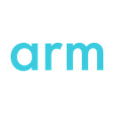

ARMNASDAQ (ADS) · Arm Holdings plc
Fair value (blend propio)
US$204,50
vs. US$190,53 mercado · +7,3%
POSTURA DEL ANÁLISIS: NEUTRAL — LA ACCIÓN CAYÓ 27% DESDE SEPTIEMBRE Y EL BLEND DE CINCO MÉTODOS QUEDA 7,3% POR ENCIMA DEL PRECIO; ANTES ESTABA 42% POR DEBAJO — el cambio de postura viene sobre todo del precio y de la reversión histórica, que ahora incluye los múltiplos de mediados de 2026; el DCF que trata la compensación en acciones como costo sigue en US$47,21 y exige creer en una década de crecimiento de 30-40% anual (ver Sección 13)
Este documento es análisis independiente con fines informativos y educativos. El autor no es un asesor financiero registrado (no CFA / no matriculado ante la CNV/SEC) y este contenido no constituye una recomendación de compra, venta o mantenimiento para ningún lector en particular. Ver disclosure completo al pie.
Licenciamiento de propiedad intelectual de CPU (regalías + licencias) · Subsistemas de cómputo (CSS) · Silicio propio: CPU AGI para centros de datos
Arm reportó, el 4 de noviembre de 2026, ingresos del segundo trimestre del año fiscal 2027 (cerrado el 30 de
septiembre) de US$1.443 millones, +27,1% interanual y por encima del techo de su guía (US$1.380 millones ±50). Las
licencias crecieron 50,1% a US$773 millones; las regalías solo 8,1%, a US$670 millones, por el impacto del precio de
la memoria en los envíos de dispositivos, aunque las regalías de centros de datos se duplicaron. La compañía dijo
que su confianza en llegar a "hasta US$2.000 millones" de ingresos del CPU AGI en los años fiscales 2027-2028
aumentó, con órdenes de compra de varios clientes hasta 2027. Guio US$1.540 millones para el tercer trimestre. La
acción cayó 13,1% al día siguiente y cerró el 13 de noviembre en US$190,53: −27,1% desde la edición de septiembre.
Con ese precio, el blend ponderado (US$204,50) queda por primera vez por encima del mercado.
Var. ingresos (últ. trim.)
+27,1%
Margen operativo 2T
13,9% GAAP · 44,2% no-GAAP
01 — Resumen Ejecutivo
Un trimestre récord, regalías frenadas por la memoria y un precio que bajó un cuarto
El 4 de noviembre de 2026, Arm reportó ingresos del segundo trimestre fiscal 2027 de US$1.443 millones (+27,1%), su
quinto trimestre seguido con crecimiento de más de 20%. Las licencias subieron 50,1% (US$773
millones), por la demanda de PI y la llegada de varios contratos grandes; el valor anual de contratos (ACV), que
normaliza ese ingreso, creció 11,9% a US$1.790 millones. Las regalías crecieron solo 8,1% (US$670
millones): más regalías por chip (Armv9, CSS) y el doble de regalías de centros de datos, compensadas en parte por el
efecto del precio de la memoria sobre los envíos de celulares y PC. El margen operativo no-GAAP fue de 44,2%; el
GAAP, de 13,9%, porque la compensación en acciones (US$376 millones en el trimestre) sigue en ~23% de los ingresos.
El CPU AGI —el primer chip propio de Arm— avanza: órdenes de compra de varios clientes hasta el calendario 2027,
primeras entregas comerciales y "más confianza" en llegar a hasta US$2.000 millones de ingresos en los años fiscales
2027-2028. La guía del tercer trimestre es de US$1.540 millones (±50) y EPS no-GAAP de US$0,56. La acción cayó 13,1%
al día siguiente y cerró el 13 de noviembre en US$190,53, 57,9% por debajo de su máximo de 52 semanas.
La valuación (Sección 13) da un blend ponderado de US$204,50, 7,3% por encima del precio. Es un
cambio grande frente a septiembre (US$151,00, −42,3%), y conviene leerlo bien: el DCF Base (US$47,21), los
comparables de software (US$150,48) y la suma de partes (US$145,95) siguen por debajo del precio; lo que lleva el
blend arriba es la reversión histórica (US$240,83, con la ventana de cuatro trimestres que ahora incluye los
múltiplos de 145-190x de mediados de 2026) y el consenso (US$272,43). La postura pasa de "neutral, con sesgo
bajista" a neutral.
02 — Historia y Evolución
De Acorn a SoftBank: el estándar de cómputo móvil que quiere ser el de los centros de datos
Arm nació en 1990 en Cambridge como un joint venture entre Acorn Computers, Apple y VLSI Technology para diseñar
procesadores de bajo consumo. Su modelo fue, desde el principio, no fabricar chips: licenciar la arquitectura y los
diseños de núcleos a quien los fabrique, y cobrar una regalía por cada chip vendido. Ese modelo convirtió a Arm en el
estándar de casi todos los teléfonos del mundo. SoftBank compró la compañía en 2016 por ~US$32.000 millones; el
intento de venta a NVIDIA (2020-2022) cayó por oposición regulatoria y Arm volvió a cotizar en septiembre de 2023.
Bajo Rene Haas (CEO desde 2022), Arm subió las regalías por chip con Armv9 y los subsistemas de cómputo (CSS), entró
con fuerza a centros de datos (Graviton de Amazon, Cobalt de Microsoft, Axion de Google, Grace de NVIDIA) y, en marzo
de 2026, lanzó su primer chip propio, el CPU AGI. Los ingresos pasaron de US$2.027 millones en FY2021 a US$4.920
millones en FY2026; el TTM al 30 de septiembre de 2026 es de US$5.464 millones y el consenso para FY2027 (que cierra
en marzo de 2027) es de US$6.101 millones.
Ingresos anuales, FY2021–FY2026 (año fiscal cerrado el 31 de marzo), más consenso FY2027E y FY2028E (millones de USD). Fuente: Form 20-F y stockanalysis.com.
03 — Modelo de Negocio y Segmentos
Licencias que se cobran una vez, regalías que se cobran por cada chip — y ahora, silicio propio
Las regalías son el corazón del modelo: un porcentaje del precio de cada chip con tecnología Arm,
cobrado por años. Las licencias se cobran al firmar el acceso a la PI y varían mucho trimestre a
trimestre; por eso Arm publica el ACV. El CPU AGI es un negocio distinto: vende silicio terminado,
con menor margen y con el riesgo de competir con sus propios licenciatarios. Los socios de Arm despacharon más de
10.000 millones de chips en el trimestre (1.500 millones más que un año antes), y los PC con Arm ya son ~20% de los
envíos mundiales.
Regalías vs. licenciamiento, FY2024–FY2026 y 2T FY2027 anualizado (×4), en millones de USD. Fuente: Form 20-F y 6-K.
04 — Desarrollos Recientes y Perspectiva
Centros de datos se duplican, la memoria pega en las regalías y el CPU AGI gana clientes
El reporte del 4-nov-2026
Ingresos de US$1.443 millones contra una guía de US$1.380 millones (±50) y EPS no-GAAP de US$0,52 contra US$0,47
(±0,04). Las regalías de centros de datos se duplicaron, y la compañía dice que la participación de Arm en los
servidores de los grandes hyperscalers pasó de 15% en 2024 a más del triple. Amazon informó que los compromisos de
ingresos de Graviton crecieron más de 20 veces. Las regalías de "IA física" (automóvil y robótica) crecieron 50%.
La memoria: el viento en contra de las regalías
El precio de la memoria —el mismo que golpea a Intel y a Qualcomm en PC y celulares— frenó los envíos de
dispositivos y dejó las regalías en +8,1%. Es el componente más cíclico del modelo de Arm y el que más depende del
volumen de teléfonos y PC.
El CPU AGI: "hasta US$2.000 millones" en FY2027-2028
Desde su lanzamiento en marzo de 2026, la compañía dice que la demanda "siguió fortaleciéndose", con órdenes de
compra de varios clientes hasta el calendario 2027 y las primeras entregas comerciales; su confianza en llegar a
hasta US$2.000 millones en dos años fiscales aumentó por más oferta y mejor mezcla de clientes. La meta de largo plazo
sigue en US$15.000 millones para FY2031. Es la "apuesta de plataforma" que justifica la suma de partes de la
Sección 13.
La guía del 3T FY2027
Ingresos de US$1.540 millones (±50), gastos operativos no-GAAP de ~US$825 millones y EPS no-GAAP de US$0,56 (±0,04).
Con eso, el primer semestre más el tercer trimestre suman ~US$4.272 millones, en línea con un año fiscal de ~US$6.100
millones.
05 — Estados Financieros
Margen bruto de software, margen operativo GAAP de industria por la compensación en acciones
Margen operativo trimestral GAAP vs. no-GAAP, 1T FY2026 a 2T FY2027. La brecha es, casi entera, compensación en acciones.
Ingresos trimestrales, 1T FY2026 a 2T FY2027, y guía del 3T FY2027 (millones de USD).
06 — Deuda y Balance
Sin deuda financiera y US$3.621 millones de caja
07 — Flujo de Caja y Capital Allocation
El flujo de caja libre TTM bajó a US$1.096 millones — 20% de los ingresos
El primer trimestre fiscal 2027 tuvo un flujo operativo inflado por cobranzas (70% de los ingresos); el segundo lo
devolvió (14%). El TTM (31,7% de OCF, 20,1% de FCF) es el ancla del DCF. Arm no paga dividendos ni recompra
acciones: la caja se usa para el capex del CPU AGI y para compensar la dilución de la compensación en acciones.
Capex e inversión en intangibles: FY2024–FY2026 y TTM al 30-sep-2026 (millones de USD).
08 — Comparables: por qué software y no semiconductores
Arm contra el canasto de software premium
Por pedido explícito, Arm se valúa con la vara del software premium: es licenciamiento de PI sin fábricas, con 97%
de margen bruto. El canasto es el de septiembre (ServiceNow, CrowdStrike, Snowflake, Palantir, Adobe, Cadence y
Synopsys), con el año fiscal que más se superpone con 2027.
EV/Ingresos 2027E del canasto de software premium y de Arm.
P/E 2027E del canasto y de Arm.
El canasto se abarató desde septiembre (EV/Ingresos promedio de 14,7x contra ~23,2x; P/E de 55,6x contra 67,6x), y
Arm también: cotiza a 24,4x sus ingresos y 62,0x su EPS del año fiscal que cierra en marzo de 2028. Arm sigue por
encima del promedio del canasto en ingresos y algo por encima en P/E.
09 — Gobierno Corporativo y Estructura Accionaria
SoftBank controla el 86% y aprobó todo en la asamblea de septiembre
CEO
Rene Haas
CEO desde feb-2022; desde abr-2026 también CEO de SoftBank Group International. Reelegido el 9-sep-2026 (962,1M votos a favor, 18,4M en contra).
Presidente del directorio
Masayoshi Son
Fundador y CEO de SoftBank. Reelegido el 9-sep-2026 (957,7M a favor, 22,8M en contra) pese a la recomendación en contra de ISS.
Accionista controlante
SoftBank ~86,4%
Flotante público de ~13,6%. "Controlled company": exenta de exigir directorio con mayoría independiente.
Remuneración
Aprobada
Política de remuneración: 939,3M votos a favor y 36,4M en contra; informe de remuneración: 957,7M y 18,3M. El paquete de hasta US$800M para Haas (tramos atados a capitalización de US$1-2 billones) contaba con la oposición de ISS y Glass Lewis.
Auditor
Deloitte LLP
Reelegido con 980,9M votos a favor.
Riesgo de overhang
Alto
Cualquier venta de SoftBank para financiar sus otras apuestas pesa sobre un flotante chico.
Con 86% del capital, SoftBank decide cualquier votación: la oposición de los asesores de voto no cambió el
resultado. Para el accionista del flotante, el gobierno corporativo sigue siendo el segundo riesgo después de la
valuación: roles cruzados entre Arm y su controlante, un flotante chico que amplifica la volatilidad y el riesgo de
que SoftBank venda.
10 — Registro de Riesgos
Qué podría cambiar esta lectura
11 — Catalizadores
Agenda de eventos relevantes
12 — Modelo Financiero Proyectado y Momentum de Estimados
El consenso proyecta un salto de 37% en el año fiscal 2028
EPS no-GAAP del 2T FY2027: guía vs. real, y guía del 3T FY2027 (US$). Fuente: 6-K del 4-nov-2026.
El salto de FY2028 incorpora el CPU AGI y la suba de regalías por chip. Septiembre usaba ~US$290 de precio objetivo
(punto medio de dos agregadores); esta edición usa una sola fuente (S&P Global, US$272,43), la misma del resto de
la ronda.
13 — Valuación: Cinco Métodos y el Fair Value
Cinco enfoques, tres por debajo del mercado, y un blend de US$204,50
Calculamos el valor con cinco enfoques —DCF, comparables de software, reversión histórica, consenso y suma de
partes— con los pesos fijos del desk: DCF 7,5% y suma de partes 7,5% (los dos dependen de supuestos de largo
plazo), comparables 25%, reversión 35% y consenso 25%. Todos los números salen de un script
(.claude/skills/informe-bigtech/modelos/arm/valuacion.py).
Qué cambió respecto de septiembre. Septiembre publicó un promedio simple de US$151,00; con los pesos
vigentes, sus métodos daban US$175,92. Esta edición da US$204,50 (+16,2%) con la acción 27,1% más
abajo. El DCF de septiembre se reproduce al centavo (US$20,64 / US$39,32 / US$64,63) con 1.090 millones de acciones
totalmente diluidas; el texto de esa edición citaba ~1.078 millones, con los que el Base daría US$39,77.
Método 1 — Flujo de caja descontado (DCF), tres escenarios
Mismo modelo que septiembre: año 1 = FY2027 (consenso US$6.101 millones), cinco años explícitos, y el margen de OCF
neto de una parte de la compensación en acciones. Por la regla de sobreponderar la demanda futura, el crecimiento de
FY2028 del caso Base se ancla en el consenso (+37,3%, que incorpora el CPU AGI con órdenes de compra hasta 2027) y
desacelera en línea recta a 11% en FY2031. El margen de OCF del año 1 (33%) se ancla en el real TTM (31,7%) y sube a
40% a medida que la compensación en acciones baja como porcentaje de los ingresos; el capex parte de 10% (11,7% real
TTM, incluidos intangibles) y baja a 6,5%. El WACC sube 0,3 puntos por el Treasury a 10 años (4,81% → 5,15%): 11,3%
en el Base. Caja neta: US$3.621 millones. Acciones: 1.090 millones.
El caso Base (US$47,21) queda 75,2% por debajo del precio. Chequeo de sesgo: el ingreso del año 1 y el
crecimiento del año 2 son consenso; el margen de OCF del año 1 está por encima del real; el capex, por debajo del
real. El resultado no viene de un supuesto sin anclar: es lo que da descontar un FCF que, después de tratar la
compensación en acciones como costo, es ~20-30% de los ingresos. El promedio simple de los escenarios es US$48,54 y
el ponderado (25/45/30), US$49,70. Como en septiembre, el precio solo se justifica con una década de crecimiento
de 30-40% anual o con un WACC cercano a 6%.
Sensibilidad del caso Base: WACC × crecimiento terminal
Método 2 — Comparables contra software premium
Igual que en septiembre, el EV/Ingresos lleva una prima de 12% sobre el promedio por el margen bruto de 97%. La base
de Arm pasa al año fiscal que cierra en marzo de 2028, el que más se superpone con el 2027 de los pares.
Resultado: US$150,48 (septiembre: US$149,41).
Método 3 — Reversión a la media histórica propia (ventana limpia)
Aplicado al EPS no-GAAP TTM (~US$2,00), el promedio de 120,4x da US$240,83. Es el método que más mueve
el blend y conviene leerlo con cuidado: dos de los cuatro cierres (junio y septiembre de 2026) tienen múltiplos de
145-190x, del período en que la acción tocó US$452. Por la regla del desk, dos trimestres seguidos en esa zona son el
régimen reciente, no un pico aislado, y no se excluyen (el mismo criterio que en el informe de AMD de esta ronda). Con
el criterio que usaba septiembre —solo los dos cierres de 62-86x— el método daría US$147,23 y el blend, ~US$171,7
(−9,9% contra el precio).
Método 4 — Consenso de Wall Street
Método 5 — Suma de partes: PI + CPU AGI
Síntesis: los cinco métodos, uno al lado del otro
"Football field" de valuación. La línea roja marca el precio (US$190,53); la azul, el blend ponderado (US$204,50).
El blend ponderado da US$204,50, 7,3% por encima del precio de US$190,53. Sin el consenso, daría
US$181,86. La postura pasa a neutral: el precio quedó dentro del rango que dan los métodos, y la
brecha frente al blend es chica. Pero el cambio no viene de que los flujos de caja hayan mejorado: el DCF, la suma de
partes y los comparables siguen por debajo del precio. Viene de que la acción cayó 27% y de que la reversión
histórica, con el peso más grande del blend, ahora incluye los múltiplos de mediados de 2026. Si el mercado vuelve a
los múltiplos de fines de 2025, el blend baja a ~US$172. Para quien crea en la tesis del "estándar de cómputo de la
IA", el precio es más razonable que en septiembre; para quien descuente flujos, sigue siendo caro.
14 — Limitaciones del Modelo
Qué asume este análisis, y dónde puede fallar
La valuación con la vara del software es una decisión deliberada (pedido del usuario) que hace más generosos los
comparables que una vara de semiconductores. El DCF trata la compensación en acciones como costo; un DCF que la
sumara de vuelta daría un número mucho más alto. El 77,8% del EV del Base viene del valor terminal. La reversión
usa EPS no-GAAP TTM aproximados (Arm no publica la serie) y una ventana que incluye los múltiplos del pico de 2026:
es el método que más mueve el blend y el que más depende de que ese régimen de múltiplo siga vigente. La suma de
partes depende de un múltiplo de 20x y de una estimación propia de los ingresos del CPU AGI en FY2028. El consenso
de septiembre era el promedio de dos agregadores (~US$290); el de esta edición es de una sola fuente. El
gobierno corporativo (control de SoftBank) no está reflejado en ningún método de forma directa.
Documento elaborado a partir de fuentes públicas: SEC EDGAR (Form 6-K y Form 20-F de Arm Holdings plc, CIK
0001973239), carta a accionistas del 2T FY2027, resultados de la asamblea anual del 9-sep-2026, S&P Global Market
Intelligence, stockanalysis.com, Yahoo Finance y prensa financiera especializada. Cifras fundamentales con fecha de
corte en el 6-K del 4-nov-2026 (trimestre cerrado el 30-sep-2026); precio de mercado, Treasury a 10 años y precios de
comparables al cierre del 13-nov-2026; consenso al 15-nov-2026.
Sobre el autor y la naturaleza de este documento: este informe es un análisis independiente
elaborado por Manfredi Investment Research & Markets con fines exclusivamente informativos y educativos. El autor
no es un asesor de inversión registrado, no está matriculado ante la Comisión Nacional de Valores (CNV), la SEC, ni
ningún otro organismo regulador equivalente, y no mantiene una relación de asesoramiento financiero personalizado con
el lector. Ninguna cifra de este documento —incluido el "fair value" de portada, los escenarios de DCF, ni la
síntesis de la Sección 13— constituye una recomendación de compra, venta o mantenimiento para ningún lector en
particular, ni considera la situación financiera, los objetivos o el perfil de riesgo individual de quien lo lee. Los
escenarios de DCF son estimaciones propias sujetas a los supuestos declarados explícitamente en la Sección 13, y no
representan guidance oficial de ninguna de las compañías mencionadas salvo donde se cita de forma directa y
atribuida. Verificar cifras contra el 6-K/20-F más reciente de la compañía, y consultar a un asesor financiero
matriculado, antes de tomar cualquier decisión de inversión.